[SH4] Trying to Analyze the Rare Lewd Magazines
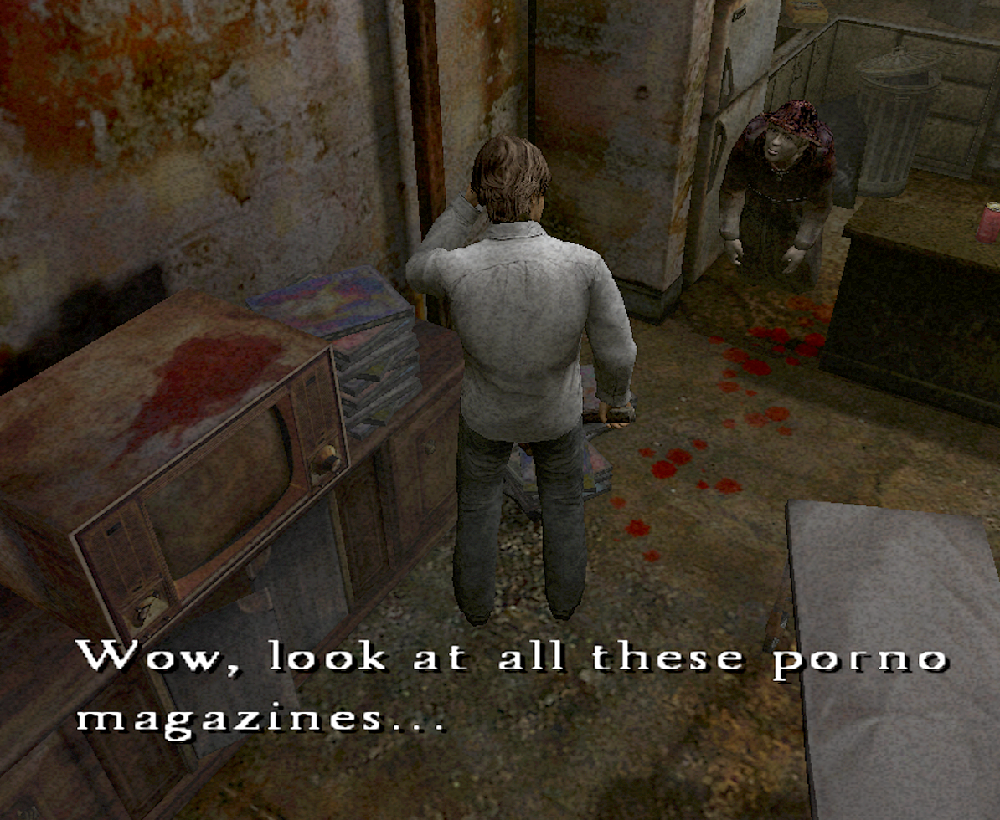
Let's Take a Look at the Rare Adult Magazine Texture in Room 301 (SFW)
![[SH4] Trying to Analyze the Rare Lewd Magazines](img/da37.png)
This is a mirror of the DeviantArt version linked above, provided as a backup and for easier access.

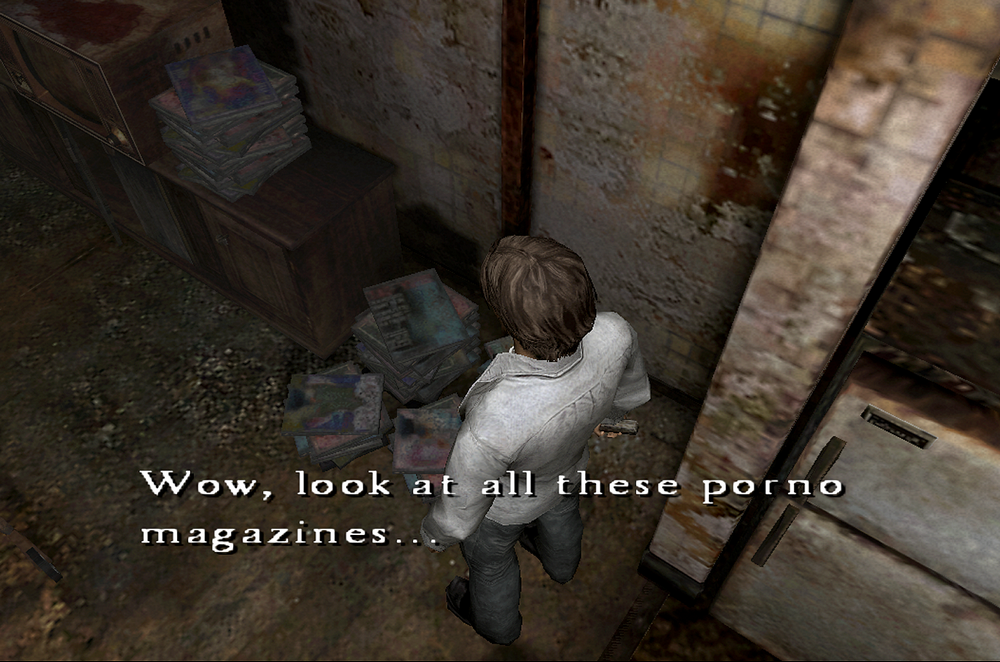
Now, about the magazines scattered around the room in that scene that's been turned into a meme. They're in Mike's room, Henry's neighbor. Apparently, they were given to him by Joseph, the previous tenant before Henry. I looked into just how rare these books might be.
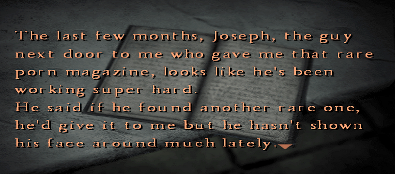
But to avoid getting your hopes up, I'll say this first: unfortunately, they were SFW. This post is safe for reading at work… 👀
The images look blurry, but that's how they are originally. Even when you check the texture files, they don't look much clearer.
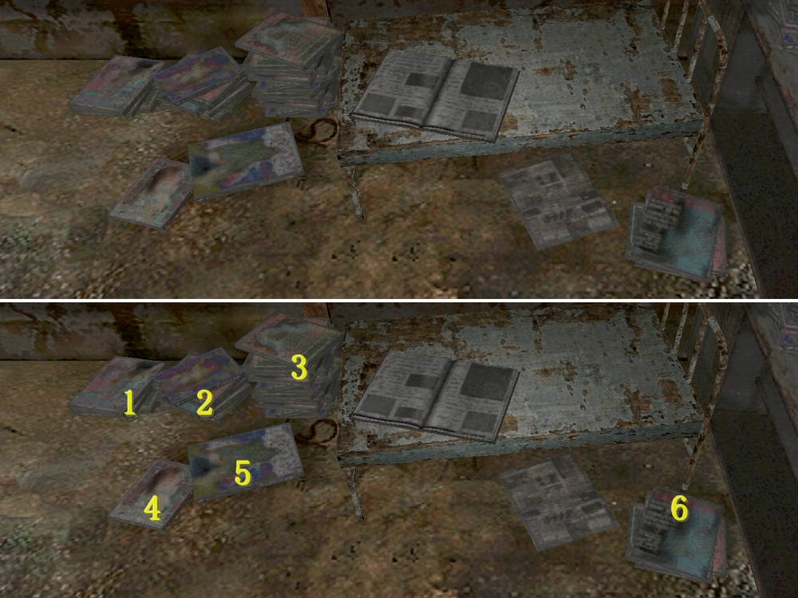
There are only about six different magazine images being reused over and over.
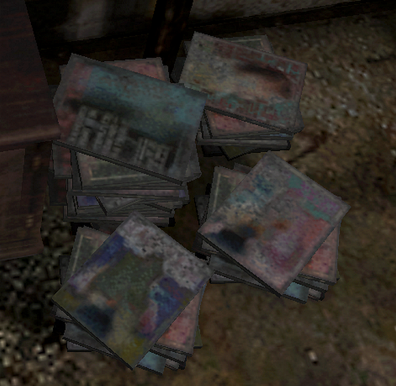
1. Hmm... a pink-haired girl and a wolf? Maybe it's some kind of Little Red Riding Hood metaphor.
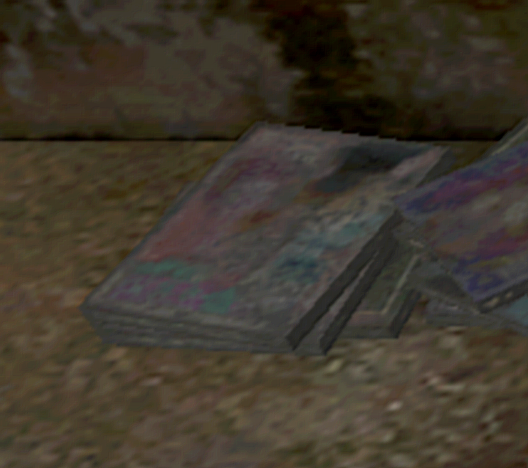
2. It kind of looks like there's a lot of skin tone, but it's so blurry that I can't really tell. The text on both sides looks almost readable, but not quite...
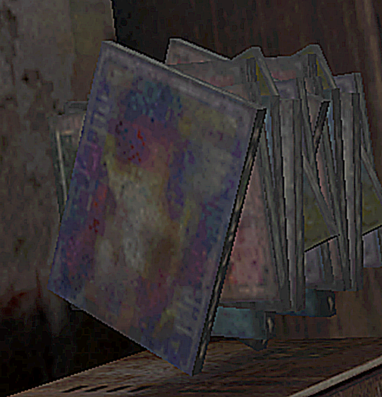
3. LUP...? LIP...? It seems like there's a title starting with the letter L. And what is this illustration supposed to be? It kind of looks like a "Jaws" poster with its mouth wide open. A shark fetish would be way too niche…
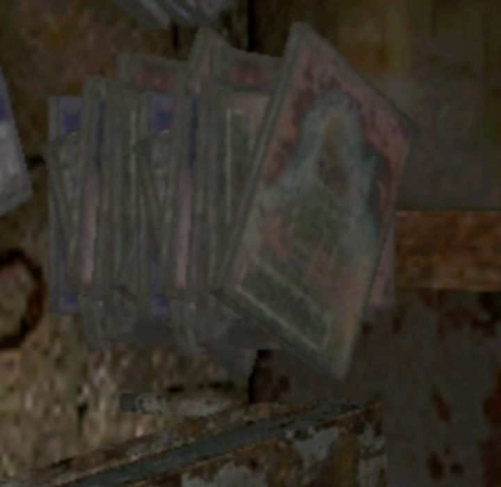
4. I think the short-haired girl on the cover is from a Japanese gravure magazine or a manga. That could be pretty rare over in the U.S., haha.
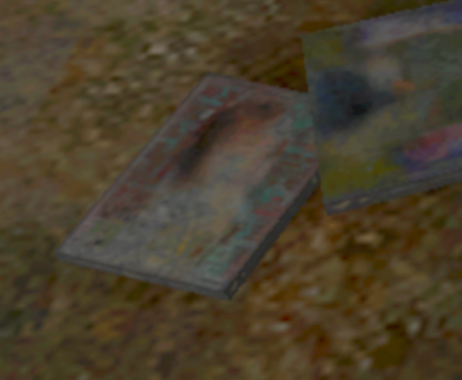
5. There's also one that's like a sneaker magazine. Is it fetishy?
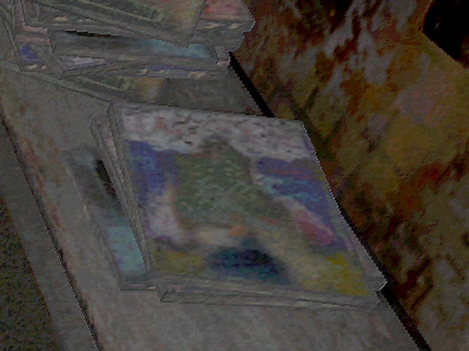
6. I think this is the correct orientation, but I have absolutely no idea what kind of book it is.
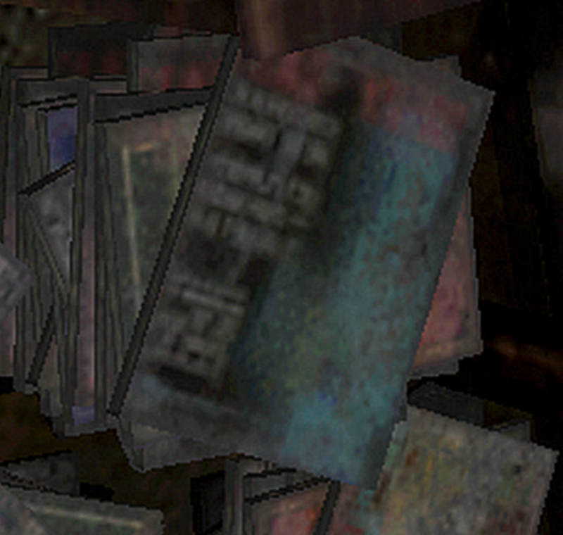
That was about it.
If anyone can make out the image or read the text on it, please let me know.
I figured someone else besides me might be curious what these books actually are, so I put it all together. I've mentioned many times how detailed the other elements are, so compared to that, this level of blur feels very intentional.